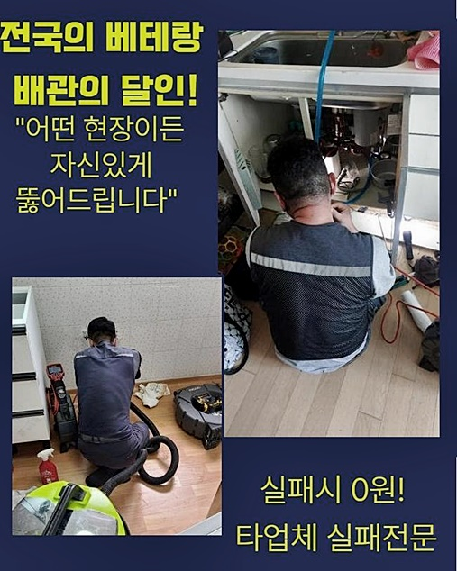
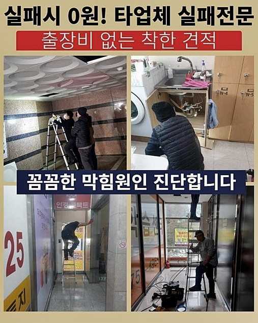
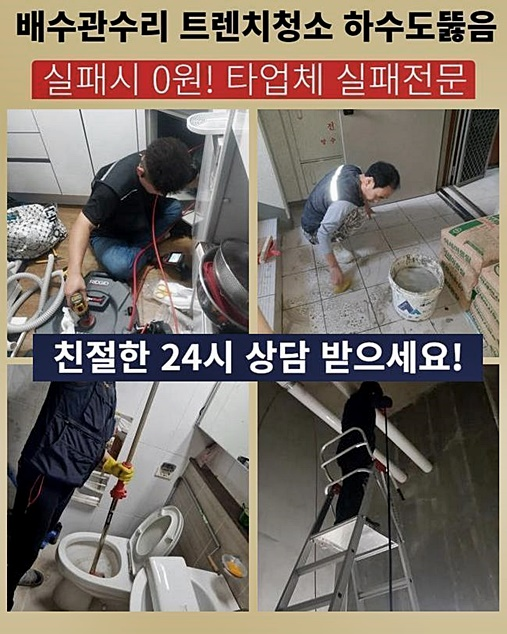
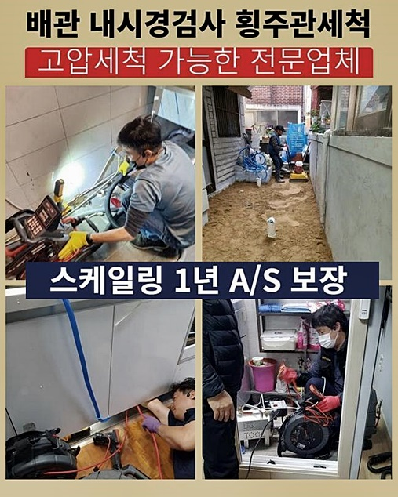
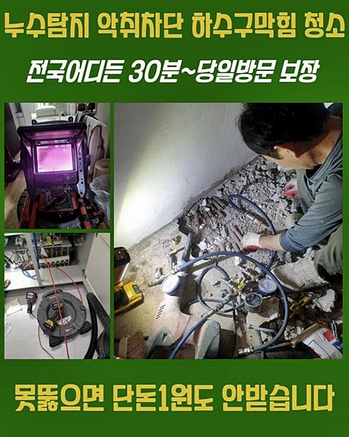
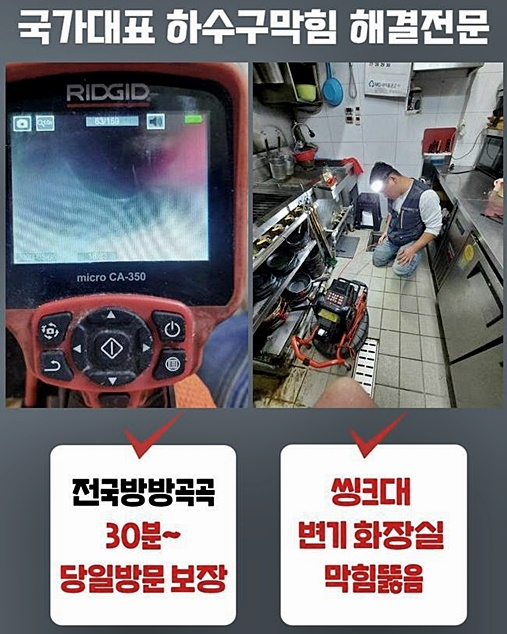

🏠 강북 미아동세탁기배수구막힘 송중동 배관내시경카메라 출장수리
용인 하수구막힘 전문 시공 후기

📋 작업 개요
- 위치: 용인
- 서비스 유형: 하수구막힘, 배관막힘, 역류해결, 뚫는업체, 배관청소, 고압세척
- 작업 일시: 2024. 7. 6. 16:43
- 업체명: 하수구수사대 (010-5615-2118)
🔍 문제 상황
강북 미아동세탁기배수구막힘 송중동 배관내시경카메라 출장수리
자주 발생되는 배수장애들을 수습하고 원래대로 돌려놓는 전문업체입니다
의뢰자가 의뢰해주실 때라면 언제든지 고민에 대해 답변드려요
갑자기 화장실공간의 하수도가 제 기능을 잃었다는 문제로 재빨리 증세들의 공간으로 방문했어요
욕실공간은 사용후에 머리카락등과 이런저런 이물이 쌓여 배수장애가 생기는 경우가 상당해요
이같은 경우에서는 근방에서 판매되고있는 것들론 문제를 잠재우는게 어렵기에 뚫을땐 전문성이 뛰어난 기기를 통하여 문제양상을 보이는 부위를 청소해줘야하죠
자주는 아니지만 끓는 점에 도달한 물을 부어서 문제들을 없애기위해 실시하는 고객들도 있으세요
이러한 방식도 증상완화를 기대할 순 없어요
끓는 물들을 붓는다면 고착물은 딱딱하게 굳는 특징들을 띄기에 배관 컨디션을 심하게 만들죠
이같은 사항으로인해 배수설비의 문제들은 성능이 좋은 장비를 운용하는것이 좋습니다
세척을 해줄때에 이용해주는 장치를 점검을 위해 확인해주고 의뢰자가 알려주신 장소로 조속히 달려갔죠
쉽게 해결되는 하수구의 문제들을 제외하고도 앞서 안내한것처럼 머리카락뭉치와 석회와 같은 이물질이 퇴적됩니다

🔎 원인 분석
💡 전문가 진단: 정밀 진단 장비를 사용하여 슬러지의 고착 여부를 판명하고 타격/세척 작업을 실시했습니다.
그래서 주기를 설정해 점검을 해야되겠습니다
의뢰자분껜 해결책들을 고지하고 바로 원인을 파악하여 불편들을 얼마나 잘 헤쳐나가는지 낱낱이 설명하겠습니다
문제가 생긴 지점은 화장실 내측에 자리잡은 아래 배관이였어요
체크하니 일반적인 사각형의 부품이 아니라 트렌치부분으로 파악됐죠
배수불가는 물론 예상치않은 물이 솟아오르는 피해들도 지속되고 있었습니다
보통은 트랩부속을 거쳐 배관으로 안빠진 오염물은 여과하여 이물질만 남겨두고 하수는 중앙관로로 이동시키는 이점들이 있어요
배관 위로 내부에 있던 이물이 바깥으로 솟구치며 트랩부속도 있으나마나한 상태였답니다
고객분은 문제가 생겨나고 배수시설을 사용할 수 없다며 고통을 토로하셨었는데 상당히 불편했을것으로 생각되어졌죠
위처럼 화장실내부의 설비들에서 문제가 발발할 시 다양한 측면에서 피해들이 발현될 가능성이 커요
그러므로 빠르며 확실하게 증세를 풀어드리는게 첫번째로 필수적이죠
우선 문제들의 원인부터 아는것이 중요해요
머리쪽의 촬영부속이 연결된 내시경기로 하수관으로 투입시키고자하면 내부상태를 체크해보면서 작업 계획을 세워 수리를 하게되죠
이때문에 여러가지의 문제가 발생했을때 필수적으로 써줘야되는 장치입니다

🔧 작업 과정
초입에서 잔여물이 축적되어 케이블을 하수관로의 내측으로 삽입하는게 곤란했어요
그러나 증상에 있어서 좌절하기엔 이릅니다
반복적으로 시도하니 비로소 케이블을 삽입시켰고 깊은곳도 파악해보고자 내측을 체크하다가 시야가 확보가 안되었어요
벽면쪽엔 슬러지가 상당했어요
그리고 하수관을 제대로 관찰이 안되는걸로 파악하건대 바깥쪽과같이 깊숙한 부분에도 상당수의 잔해물이 축적된것을 확인했죠
반복하여 배수구로 내시경을 투입해보니 벽면쪽엔 장판조각들로 관찰되는게 보여졌어요
하수도의 끝머리에는 엉켜버린 채로 자리잡은 이물이 존재하고있었죠
장비를 삽입시켜도 통수공간은 보이질 않았으나 고착화된 슬러지들은 눈에 띄게 보였습니다
이물이 제대로 확인되지 않아도 단단하게 굳은 이물들이 배수관의 끝머리서부터 누적되어버린걸 알 수 있었어요
해결이 쉽지않았던 곳이었으나 고객분의 문의인지라 현 시점을 방치해선 안됐죠
하수도에 존재하던 대형의 오염물은 수작업으로 제거시키고 하수도 깊이 쌓여버린 이물의 경우엔 샤프트 장비를 이용하여 없애줄 예정이였습니다
뛰어난 장비를 이용하였기에 빠르게 시정했어요
그러나 슬러지들을 청소하며 미스테리한 것이 있었는데요
도대체 왜 바닥지의 조각이 배수로에서 자리하고 있던건지 의문이였죠
이같은 궁금증을 가지고 작업 도중에 고객은 이러한 내용을 운을 떼기 시작하셨어요
듣고보니 최근에 인테리어를 맡겼는데 그때 잔해들이 하수관으로 배출된걸로 예상된다고 하셨죠
작업들이 끝났을땐 폐기물들은 그 업체들이 버려야되지만 간간이 정리하는것에 철두철미하지 못한 전문진일 시엔 이같이 바람직하지 않은 방법으로 잔해물을 폐기시킵니다
추측하건대 저희업체가 내방했던 곳에서부터 이런 까닭들로 피해를 꾸준히 받으신걸로 보여졌는데요
구간마다 장판이물이라는 폐기물들이 통수를 방해하는 바람에 배출되어야할 하수가 빠져나가지를 못한것입니다
깨끗해질때까지 제거와 석션작업을 진행한 결과 마침내 배수관을 뚫어내었어요

✅ 작업 완료
통수절차가 제대로 진행되는지 체크도 수행하니 시원하게 배수되었어요
작업 후 이곳에서처럼 빠지는게 정답이지만 하수관이 잔해로 막히게되며 고여버리다가 역류도 불거지게되었죠
다양한 장소를 찾아뵈었지만 전문성이 떨어지는 작업 결과가 보이면 안좋은 기분이 밀려오고 의뢰인이 감내했을 불편에 깊은 공감이 되는데요
이처럼 증상을 말끔하게 작업하고서 저희업체도 현장에서 철수할 수 있었어요
일상생활을 하시다가 만약 통수오류가 생겼을 시 저희의 안내를 기반해서 안정적으로 대응하는게 중요하겠습니다
이외에 의문이 있을 경우 조속히 전화하셔서 질문을 남겨주셔도 괜찮으니 편하게 연락주시면 바로 도와드릴게요!




⚠️ 하수구 배관 막힘 예방 및 관리 가이드
- ✅ 머리카락, 비닐, 물티슈 등 물에 분해되지 않는 이물질은 하수구 유입을 절대 금지해 주세요.
- ✅ 하수구 거름망을 씌우고 모여진 이물질은 주기적으로 쓰레기통에 바로 비워주셔야 합니다.
- ✅ 배관 노후가 심할 경우 이물질이 더 쉽게 걸리므로 주기적인 배관 세척(고압세척 등)을 권장합니다.
- ✅ 작업 후 1년 이내 재발 시 하수구수사대에서 무상 A/S 보증 서비스를 제공합니다.
💡 핵심 정리
- 확실한 장비 작업(내시경 점검 및 샤프트 스케일링)으로 원인을 뿌리 뽑습니다.
- 작업 후 1년 이내에 동일한 부위 재발 시 100% 무상 A/S 서비스를 보장합니다.
- 서울 · 경기 · 인천 전 지역에 24시간 언제든 긴급 출동할 수 있도록 항시 대기 중입니다.
❓ 자주 묻는 질문 (FAQ)
🚨 용인 하수구막힘 문제로 고민이신가요?
정확한 원인 진단과 확실한 시공으로 재발 없는 해결을 약속드립니다.
24시간 긴급 출동 | 서울 · 경기 · 인천 전지역 | 1년 내 재발 시 무상 A/S